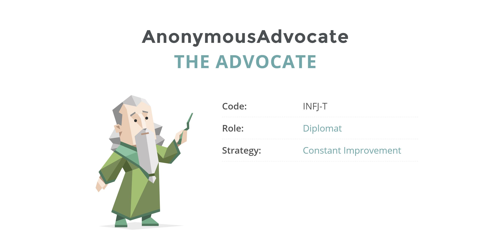
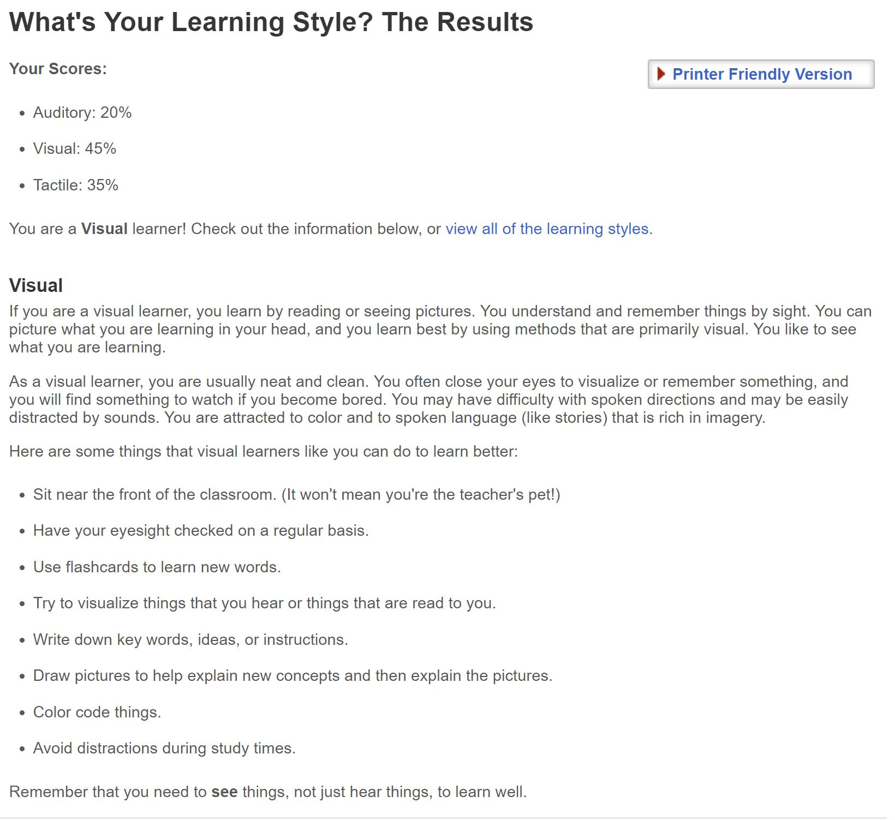
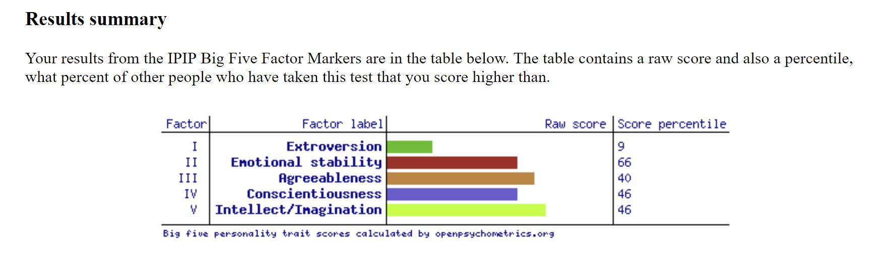

Name: Jonathan Lombard
Student Number: S3787677
Email: s3787677@student.rmit.edu.au
Wow, where to start? I suppose I'll start off with where I'm from and then go from there. I was born in Sydney in May of 1999, but at eight months old my family
moved back to Melbourne; where they were originally from, then at the age of seven we moved overseas to Singapore (due to my Dad's work) and stayed there for three years.
Then, in 2010 we moved to Germany and stayed there for a year (Again, because of my dad's work), I especially enjoyed my time in Germany, as my Mum has German heritage
and has always been fluent we had little trouble getting around, being an introverted computer obsessed 11 year old however, I couldn't quite pick up the language
(Though I wish I had!). In mid 2011 we moved back to Australia and stayed for just shy of 3 years before moving again, back to Singapore, where we also stayed for three years.
Finally, after finishing my HSC in Singapore at an Australian International School I found my way back to Australia for Uni while my family remained behind in Singapore.
My interest in IT stems from my childhood, I've always had a deep fascination for computers, and over time that fascinaton has developed into a genuine
interest in how IT systems can be used to improve our daily lives. In particular I find cyber-security and machine learning to be the most intriguing parts
of the broader IT field.
I think the person who influenced me most in my interest for IT is my dad, he works in IT himself for a company called Dimension Data
Through him I heard all about the cool things people in IT get to work on, which set me off on my path.
I chose RMIT for a couple reasons, I suppose the most significant reason would be the wide variety of majors and electives that the IT course offers here.
Another reason is that I have a number of old friends that I went to school with also studying at RMIT, and It's always important to have that social aspect.
Those friends also spoke highly of RMIT, so here I am.
I'm not exactly sure about what I'll learn during my time here, since IT is a super broad subject I imagine we'll cover topics from web development to cybersecurity.
I am particularly interested in anything concerning cybersecurity or machine learning/AI (Although I don't have any experience in those subjects, they do still sound fun).
I'm not entirely sure on what my ideal job would be, though I suppose something in a field I'm interested in would be a good place to start.
Maybe something like this?
A job like this requires several years of experience in cyber security, so it's definitely something I'd have to work towards.
The kind of work a senior cyber security engineer does involves deploying and maintaining security networks, and managing a team of junior
security engineers, this appeals to me because besides the cybersecurity aspect, it'll challenge me to get out of my shell more and interact
with others rather than be a shut in all the time.
This position requires seven years of experience in cybersecurity at the minimum, which is well outside of my skill set at the moment as I have
absolutely zero experience in that regard. In order to get to that level, I plan on choosing subjects over the course of my degree that'll steer me
in that direction, after my time at RMIT I'll also have to choose a junior level cyber security job to get the required experience.
Here are the results of some online tests I took, specifically the Myers-Briggs test, a learning style test,
According to the Myers-Briggs test, I am an 'advocate'
According to this learning style test, I am a visual learner
I also completed a third, seperate test. The results can be viewed here.
 I think that these results are fairly accurate, in particular the Myers-Briggs test and the learning style test. Those results fit me almost exactly.
Personality tests like these are always good because they illustrate what your strengths are so you can emphasise them, or they can show you in what ways
you could improve yourself if you want to go down that path. As I mentioned prior the Myers-Briggs test result perfectly condenses my personality and how I interact
with others into an easily understandable metric, I am reserved, but can very easily see things from the perspectives of others and can mediate accordingly,
this mediation and absence of conflict means that the group that I'm apart of can reach our desired goals more quickly.
The test result also reinforces a behaviour that I've increasingly noticed over the years, in that my reservedness restricts my ability to make my ideas known.
This is something I definitely would like to change going forward. As for group formation, preferably I'd like to be in a group of people with similar interests,
but differing personalities and backgrounds, that way we get a good mix of perspectives and ideas rather than all coming up with similar ideas because we all think the same.
As I mentioned earlier, one of my great interests in IT is cybersecurity, something I've always wanted to do is create my own server that i can use to host games for my friends.
Games like Halo CE and Halo 2, Minecraft, or even other titles like Terraria. The usefulness of a home server goes far, far beyond just hosting games too, It can also serve as a
handy way to store large amounts of files like photos, movies, or school/work documents. The server will run on a raspberry Pi, which are cheap, easy to use, and ideal for a small
scale home server system. Beyond the usefulness of being able to host servers for games and file storage, a raspberry Pi server will give me an ideal opportunity to get used to
implementing and using Cyber-security software. I'll likely have to find a way to secure my information and test the defenses of the server to look for gaps.
My motivation for a project like this stems from a desire I've had for a while now. Being able to host games for my friends, and having a place to store my movies and other files
that I can then access from around the house is super convenient. Such a project will also serve to get my feet wet, figuratively speaking, with cyber-security.
Besides the actual end product, another benefit is that such a project will give me valuable experience and help me decide if a career in cyber-security is worthwhile.
The actual server itself will be a Raspberry Pi or another similar, small scale computer that we can run linux off of, during our project we will all share one Raspberry Pi
and work off of it together, this saves costs as we wont have to each buy our own. Obtaining an external power supply, more RAM, or other parts may be necessary.
To test the server we could try hosting games on it or uploading files, then once we're satisfied with it we can try to hack into it and explore methods for security.
The added benefit of such a small piece of equipment is that it's portable, each of us could take it home to fiddle around with it or run experiments, and the nature of the sever
means that each of us could access and edit the server remotely, which in turn is just another way to test it.
The server will be used to host whatever our group deems useful, it could be used to host a game server, we could host some files on it, the number of uses a server like this
is nearly limitless.
The tools and software we need to complete this project are twofold, firstly we will need to aquire a Raspberry Pi or similar hardware. Basically any small scale modular computer
that we can run Linux off of will do. This may also include other hardware such as a power supply, perhaps a screen, or even some extra storage space and RAM.
Secondly, we will need to use Linux to run our server. Thankfully Linux is an open source software so we can easily obtain whatever operating system we choose.
Undertaking this project will be incredibly rewarding once completed, it does present several problems that need to be overcome however.
Firstly, we will need to teach ourselves how to use a Raspberry Pi or similar hardware, this shouldn't be too difficult as for the most part small scale modular computers
like Raspberry Pi's have been designed to be easy to pick up and learn, but learning how one works will still nevertheless take time.
In addition to learning how to use the Raspberry Pi, we will also have to familiarize ourselves with Linux, this is probably the easiest step, but a step all the same.
Finally, testing the server for gaps in it's security will be quite hard, and likely an optional final step as we'd have to familiarize ourselves with an array of security software.
Obtaining a Raspberry Pi and a Linux based OS will be very easy, as already mentioned Linux is an open source platform, and Raspberry Pi units are very cheap.
Personally, completing this project will create a sense of self-fulfillment and serve as a model for my own home server which, as previously stated, will allow me to store data and host servers
for my friends. As for the group at large it'll give us insights into cybersecurity systems, and managing and developing servers, while also providing valuable experience that may open up
doors into further projects.